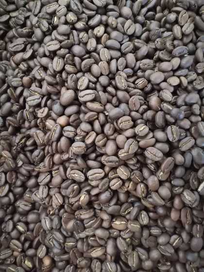
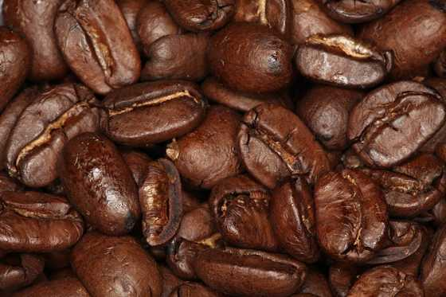
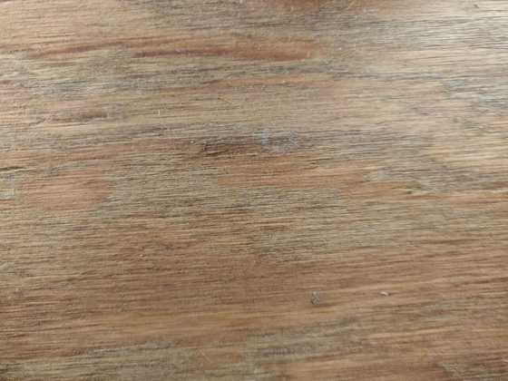
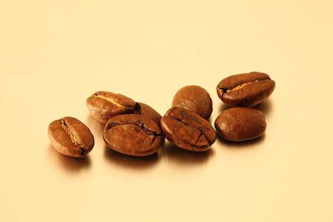

ROASTERY CAFE / YOSANO, KYOTO
焦がさず、芯まで。
つくる人の焙煎所。
YOSANO ROASTER roastery cafe
自分でつくった焙煎機で、珈琲豆とカカオを焙煎する。京都・与謝野町の、珈琲が飲める焙煎所です。
Origin
焙煎機づくりから、はじまった。
紹介記事によると、運営するのは与謝野町でオーダーメイドの自転車・オートバイ部品などを手がける「WELD ONE」の小西さんです。珈琲を焙煎する自転車仲間から「焙煎機を作ってほしい」と頼まれたことが、はじまりとされています。既存の機械をまねるだけでは納得できず、約2年をかけて、ビーンズを遠赤外線でじっくり温めるセラミック焙煎機を完成させたそうです。
表面を焦がさず、熱を内側まで届ける。そのやり方は珈琲豆から、のちにカカオへと広がり、自社でカカオの皮むき機まで作ってbean to barチョコレートを手がけるようになりました。2024年3月14日には、珈琲が飲める焙煎所としてこのロースタリーカフェがオープンしています。

情報源: 暮らしたび京都(取材記事) / YOSANO ROASTER 公式サイト(カフェ) / Instagram
上記以外の文章(見出しの言い回しなど)は制作側の表現です。「YOSANO ROASTER」という名前の由来は、確認できた資料に記載がなかったため載せていません。
Roasting
遠赤外線で、じんわり焙煎。
公式サイトによると、自社製のセラミック遠赤外線ROASTERで、珈琲豆とカカオを焙煎しています。表面を焦がさずに物質そのものを温める焙煎で、苦味をおさえ、口の中でほどけるときに素材本来の香りが広がることを目指しているとのことです。焙煎機のショールームも併設されています。
- 豆(カカオ)を、セラミックの焙煎機へ
- 遠赤外線で、表面を焦がさず内側まで温める
- 香りと甘みを引き出して、一杯・一枚へ
上の3段階は、公式サイトの説明をもとに制作側がまとめた流れのイメージです。


Voice
お客様の声(イメージ例)
イメージ例以下は制作側が作成した例文で、実在のお客様の声ではありません。
焙煎機を自作された珈琲屋さんと聞いて、興味を持って立ち寄りました。苦味がやわらかくて飲みやすかったです。
イメージ例
珈琲と一緒にチョコレートも楽しめるのがうれしい。お土産に豆を選びました。
イメージ例
ゆったりした時間が流れていて、与謝野町に来たらまた寄りたいお店です。
イメージ例
Access
ご案内
| 所在地 | 京都府与謝郡与謝野町明石2400 カーナビでは「明石2399」と入力、とのご案内があります(公式サイト)。 |
|---|---|
| 営業日・時間 | 木・金・土 10:00〜16:00(イートインのラストオーダー15:30) 公式サイトの案内です。臨時休業などはInstagramでご確認ください。 |
| 電話 | 準備中 |
| 価格 | 準備中 |
| 駐車場 | あり(公式サイトの案内) |
| SNS | Instagram @yosanoroasterkyoto_cafe |